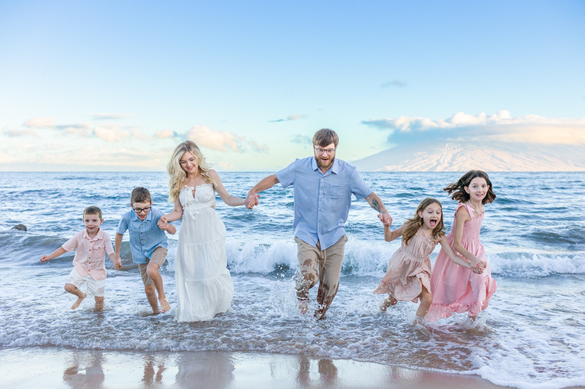
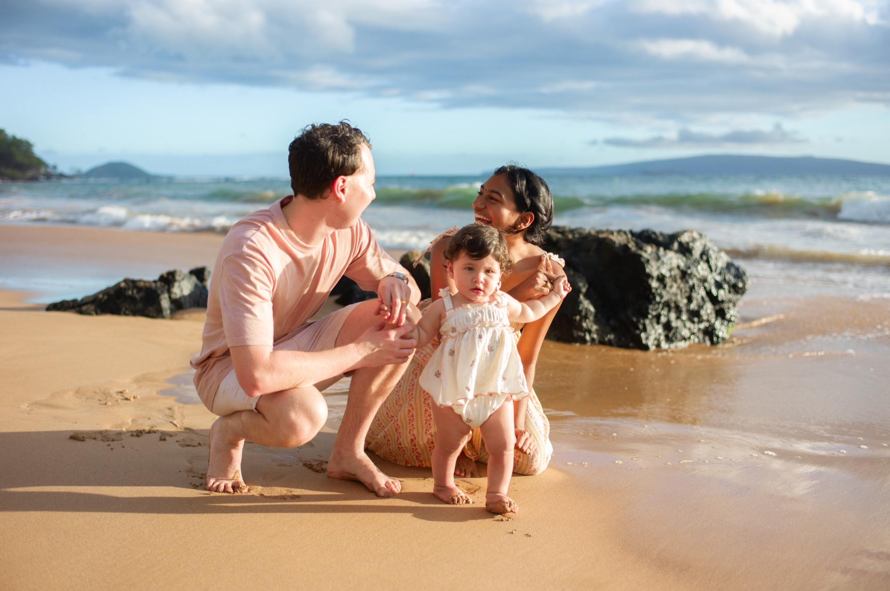
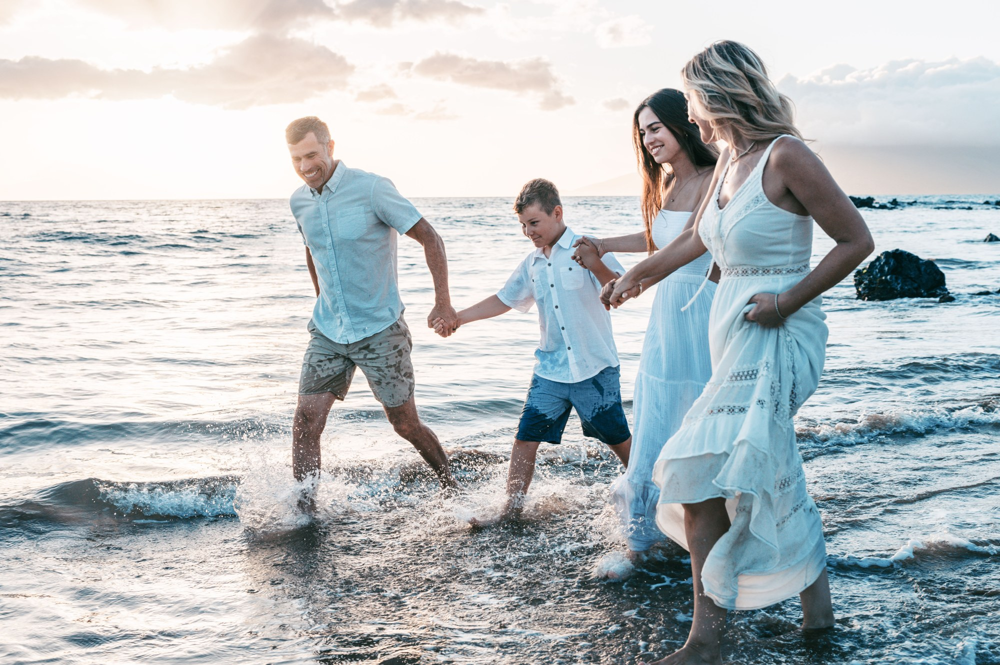
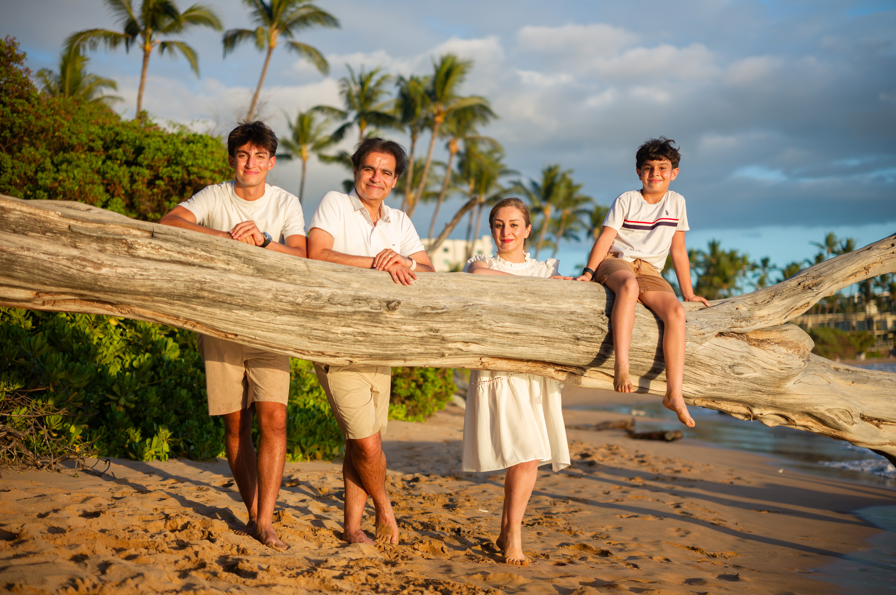
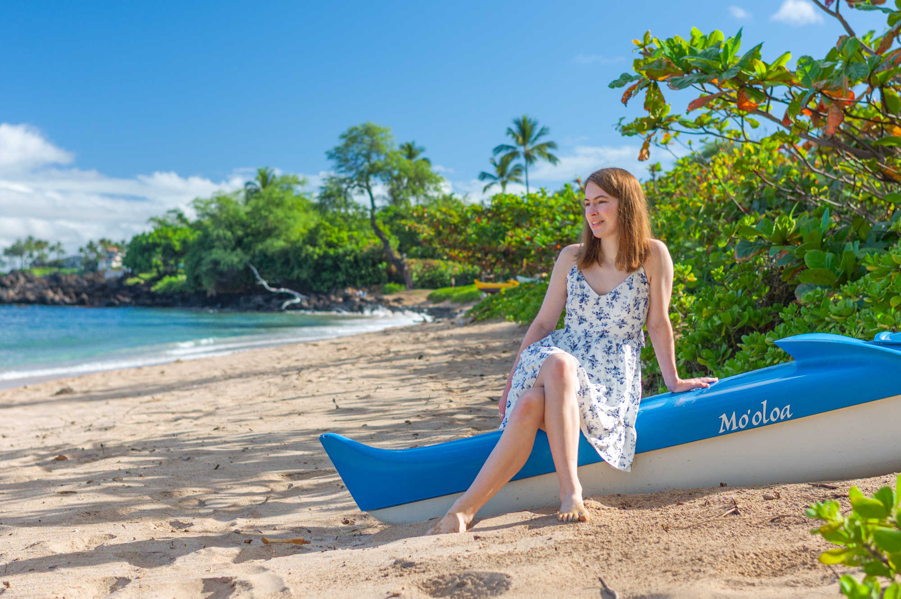
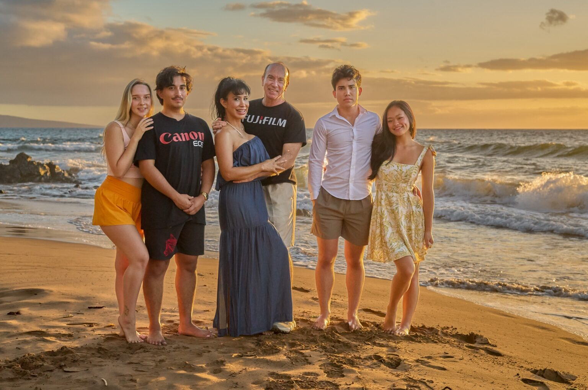

Best Color Palettes
Soft neutrals, whites, cream, sky blues, and muted earth tones blend beautifully with South Maui’s golden sand and turquoise ocean.






Book a relaxed 20-minute family photo session from $299. Conveniently located near all South Maui resorts. Choose morning, sunset or turquoise water and receive 25+ naturally edited photographs in 24–48 hours.
Read recent reviews from clients who booked photographs with our family.
“Laurence was terrific! Highly recommend.”
“What an amazing experience!”
“From start to finish, the experience was absolutely amazing.”
Recent reviews of the Balter family photography team, published on Wailea Photo’s Tripadvisor profile.
Read our latest reviews on TripadvisorEach session is designed for Maui visitors who want professional vacation portraits without a long photoshoot or complicated print package.
Soft morning light, cooler temperatures and a quieter Wailea beach. Perfect for your first few days on island — take advantage of East Coast/Mainland jet lag when waking up early is effortless!
Warm evening light, ocean color and the possibility of a dramatic Maui sunset. Live availability makes it easy to fit portraits into your vacation plans.
Pricing shown includes up to five people. Additional family members can be easily added on the live calendar during checkout.
Easy rescheduling before your session if Maui weather isn’t cooperating.
Keep it simple and comfortable so your photos feel natural and effortless.
Soft neutrals, whites, cream, sky blues, and muted earth tones blend beautifully with South Maui’s golden sand and turquoise ocean.
Linen shorts, flowy dresses, and breathable cotton capture movement in the ocean breeze and stay comfortable in warm coastal air.
Barefoot on the sand is usually best! Sandals or flip-flops work great for walking down from the parking area.
Heavy logos, matchy-matchy uniform outfits, and bright neon colors tend to reflect onto skin and distract from genuine family moments.
Clear answers about what is included, timing, delivery and weather before you reserve a session.
Each 20-minute session includes calm direction from an experienced Maui photographer and at least 25 naturally edited, high-resolution digital images delivered in an online gallery.
Your edited online gallery is delivered within 24 to 48 hours after your session, so many visitors can enjoy and share their photographs before leaving Maui.
The listed session price includes up to five people. Additional-person pricing is shown on the live booking calendar before you finalize your reservation.
Yes. The short, calmly directed format works well for families with children, couples, maternity portraits and small multigenerational groups visiting Maui.
You may reschedule before your session if the weather is not cooperating. Maui conditions can change quickly, so your photographer will help make a practical decision.
Sessions are photographed at carefully selected shoreline locations in Wailea and South Maui. Meeting details are provided immediately upon booking.

Maui Mini Session is a family-run portrait studio created by people who have photographed Maui for more than 25 years. Every session is shot by our own team — never an outside contractor.
We built Maui Mini Session to be one of the most affordable, memorable experiences you can have on vacation, without cutting corners on quality.